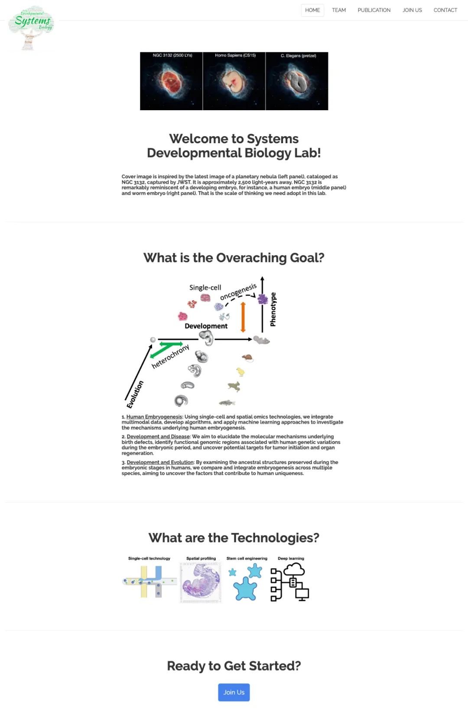

复旦大学基础医学院招聘博士后/科研助理
原文：https://mp.weixin.qq.com/s?__biz=MzAwMzIzOTk5OQ==&mid=2247507717&idx=1&sn=71dc9be5f9707f6ac38bca4e33a2308c&chksm=9b3ca655ac4b2f43cd7c83aed29e40e14535e5c95a686a2aa0b6bf8360f9b9716f06d10d1731#rd 合集：求职/求学/招聘
联系方式：
xuyichi@fudan.edu.cn

一、课题组简介
徐一驰，复旦大学基础医学院青年研究员、博士生导师，入选国家级青年人才计划（2023）和上海市人才计划。 浙江大学本科，中科院马普所计算生物学博士，德国马普所访问学者，纪念斯隆凯特琳癌症中心博士后。长期致力于计算生物学和发育生物学的交叉领域，利用单细胞测序、成像和大数据挖掘，研究人类以及模式生物早期胚胎发育。主要成果发表在Nature Cell Biology，Nature Machine Intelligence，Science Advances等杂志，研究论文影响力进入前5%（Altmetric）。担任Bioinformatics等多个杂志审稿人，参与人类细胞图谱计划（Human Cell Atlas）。课题组与哈佛大学丹娜法伯癌症研究所、纪念斯隆凯特琳癌症中心、法国国家健康与医学研究院等有广泛合作。
二、实验室主要研究方向
-
人胚发育：利用单细胞测序和空间组学，研究人类胚胎发育机制。
-
发育与疾病：寻找出生缺陷分子机制，揭示肿瘤发生或器官再生的潜在靶点。
-
发育与进化：以人胚胎期祖先结构为切入点，探索多物种胚胎发育的比较和整合。

详见https://sdb-lab.shinyapps.io/home/
三、应聘条件
博士后
-
具有或即将获得相关专业博士学位，以第一作者身份发表过SCI论文。
-
对研究方向有兴趣，具备单细胞测序、机器学习、小鼠胚胎发育等研究背景者优先。
-
熟练使用Python或R编程语言，熟悉Linux系统，英文能力强。
科研助理
-
生物相关专业本科及以上学历，有单细胞测序文库构建或分析经验者优先。
-
有科研助理工作经验者更佳，英文阅读和写作能力良好。
四、福利待遇
博士后
-
薪酬：基础年薪25万，获得各类博后人才计划后可达30-50万，具体面议。
-
科研奖励：在站期间可享受优秀博士后科研奖励，复旦大学高水平大学建设项目支持。
-
生活保障：按规定入住复旦大学博士后公寓，子女入学入托等按照学校博士后相关政策执行。
-
其他：按照复旦大学规定提供各类社会保险和住房公积金；根据上海市相关规定办理落户；优秀博士后出站，符合学校人才引进条件的，可竞聘学校教学科研岗位。
科研助理
-
按照复旦大学常规招聘标准，年薪10-15万，具体面议。
-
在聘期结束后将进一步支持其事业发展。
五、申请方式 个人简历和1页的申请信（即cover letter，包括研究兴趣、拟入职时间等信息），博士后岗位请另提供2-3位推荐人的信息和联系方式。将相关申请材料的电子版发至xuyichi@fudan.edu.cn，邮件标题请注明：博士后（或科研助理）申请+姓名。应聘材料将予以严格保密，初审通过者将另行通知面试。
 往期回顾
往期回顾
歪!?来"Biomamba 生信基地"兼职？****************
荷兰马斯特里赫特大学Judith教授招收2023年生物信息学方向博士生求学| 寻找一个生信博导
Ulf’s Computational Biomedicine Lab 博士招聘启示
求学| 寻找一个肠道微生物或系统生物学的博导
南方科技大学第一附属医院刘利平课题组诚聘博士后中南大学湘雅医院李津臣课题组诚聘生物信息学相关多学科交叉人才福州大学医工交叉研究院徐贻佺课题组招生启事
带你们做了那么久的单细胞，也带你们找找工作
浙大医学院生物信息学 博士招生 调剂信息浙江大学招聘博士后&科研助理
加州大学洛杉矶分校招聘[staff scientists in computational biology]
毛华伟教授课题组科研博后/科研助理
赵慧英课题组科研助理招聘启事
西湖大学曾坚阳人工智能与计算生物学课题组招聘| 博士生、实习生
复旦大学马通课题组招聘|科研助理
上海交通大学医学院冯智星课题组招聘
美国德州理工大学健康科学中心（TTUHSC）生物信息学、计算基因组学博后及博士生招聘
天津医科大学蔡志刚教授课题组| 博士后招聘
求学| 寻找博导~
求学| 寻找博导. 已发表